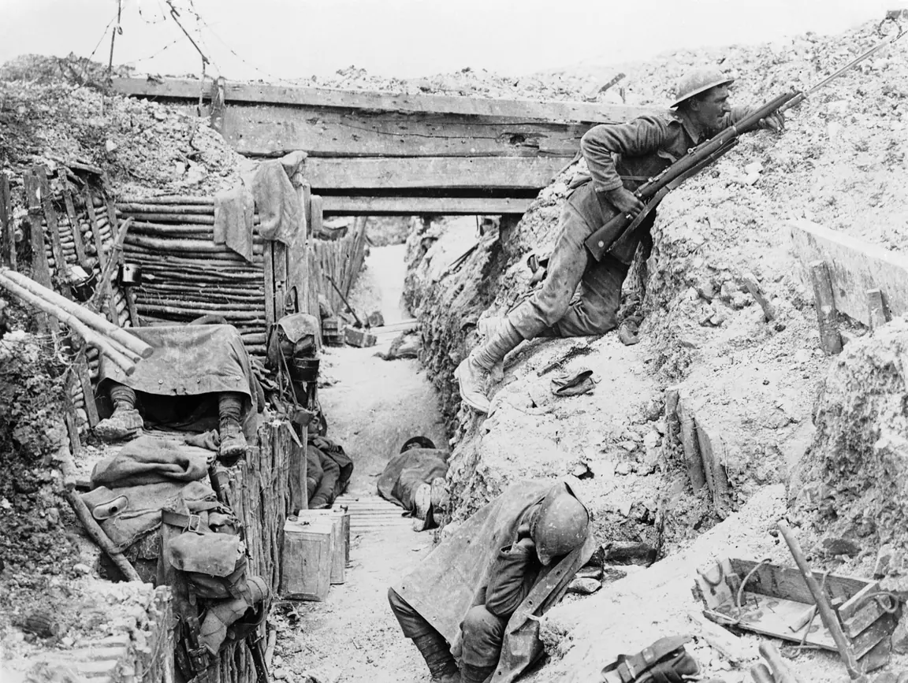
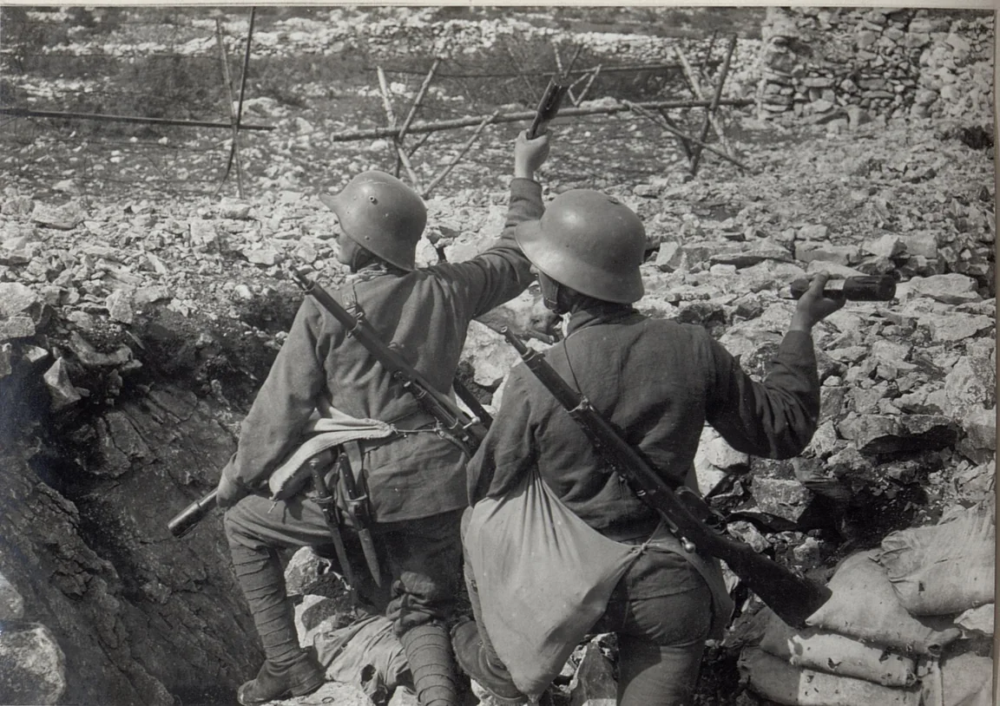
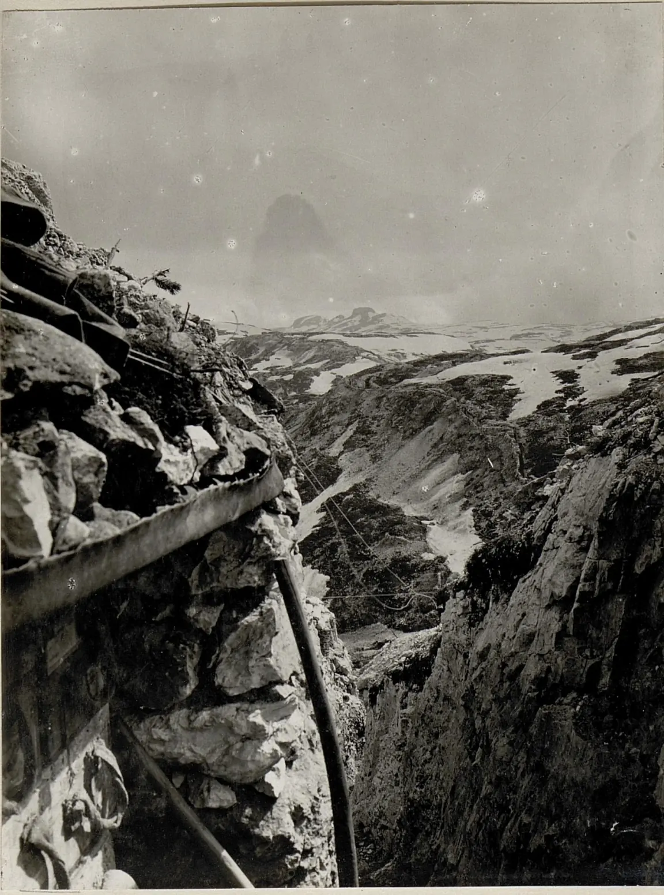
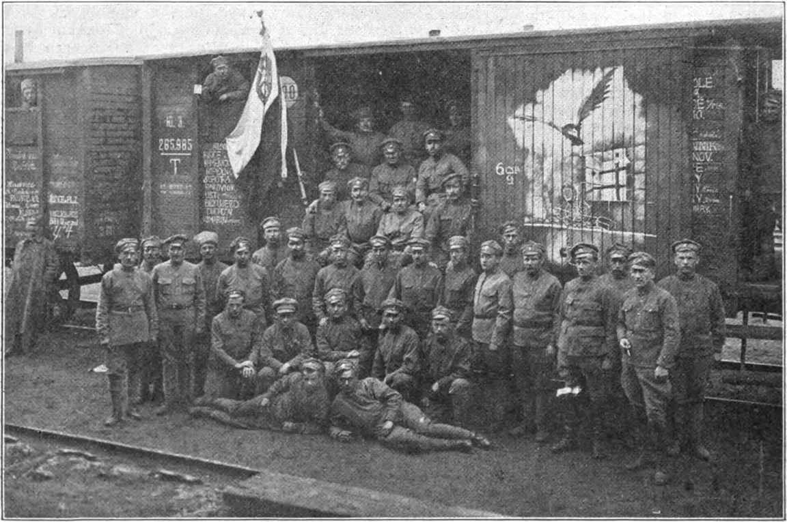
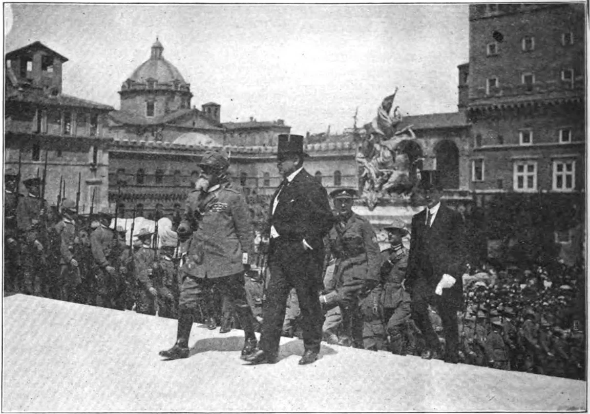
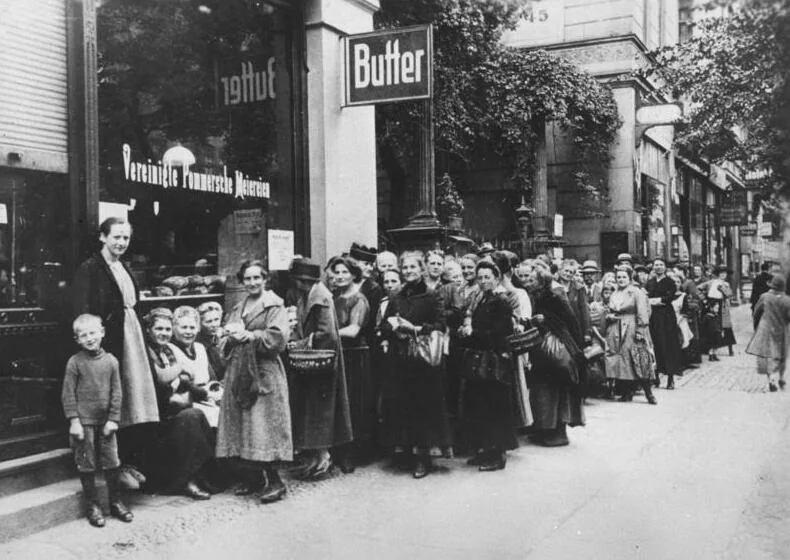
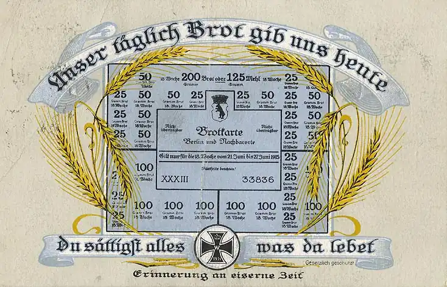
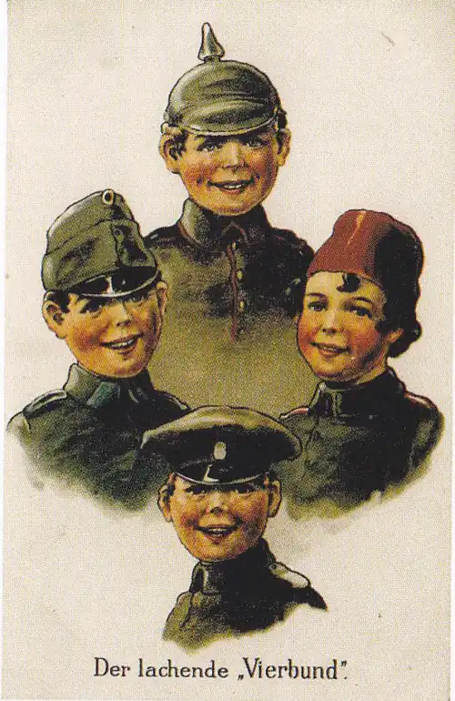

Pro 9. ročník: příčiny, průběh, život v zákopech a poválečné uspořádání.
28. 6. 1914 atentát v Sarajevu1914 vypuknutí války1916 Verdun a Somma1917 vstup USA, revoluce v Rusku28. 10. 1918 vznik ČSR11. 11. 1918 příměří1919 versailleská smlouva
Válka na dobových snímcích
Skutečné fotografie a tiskoviny z let 1914–1918. Všímej si, jak se válka lišila na různých frontách a jak dopadla na lidi doma.
Na frontě

Zákop na západní frontěSomma, 1916. Fronta strnula v zákopech; vojáci v nich žili celé měsíce v blátě, mezi krysami a pod palbou.

Italská fronta na Soči1917. Od roku 1915 tu Rakousko-Uhersko bojovalo s Itálií; v jeho armádě sloužilo mnoho Čechů. Ocelové přilby přinesla až tato válka.

Válka v horáchNa italské frontě se bojovalo i ve výšce přes 2 000 m. Vojáky víc než nepřítel ohrožovaly mráz a laviny.
Českoslovenští legionáři

Legie v RuskuLegionáři projeli Sibiř po magistrále ve vagonech, kterým říkali „těplušky“. Byli to dobrovolníci, kteří bojovali za samostatný stát.

Legie v ItáliiŘím, květen 1918. Prapor dostala i legie v Itálii – dohodové státy tak uznávaly československý odboj.
V zázemí

Fronta na potravinyBerlín, 1917. Námořní blokáda a nedostatek mužů na polích způsobily hlad; hodiny ve frontách znaly i české země.

Potraviny na lístkyPohlednice z roku 1915 s chlebovou kartou. Mouka, cukr či tuk se přidělovaly na příděl – kdo neměl lístek, nekoupil.

Válečná pohlednice„Smějící se čtyřspolek“: Ústřední mocnosti jako veselí chlapci. Propaganda chtěla, aby válka působila jako hra – i pro děti.
Válka trvala od roku 1914 do 1918 a bojovala v ní Dohoda (Francie, Británie, Rusko, později Itálie a USA) proti Ústředním mocnostem (Německo, Rakousko-Uhersko, Osmanská říše, Bulharsko). Byla to první totální válka – zasáhla i civilní obyvatelstvo.